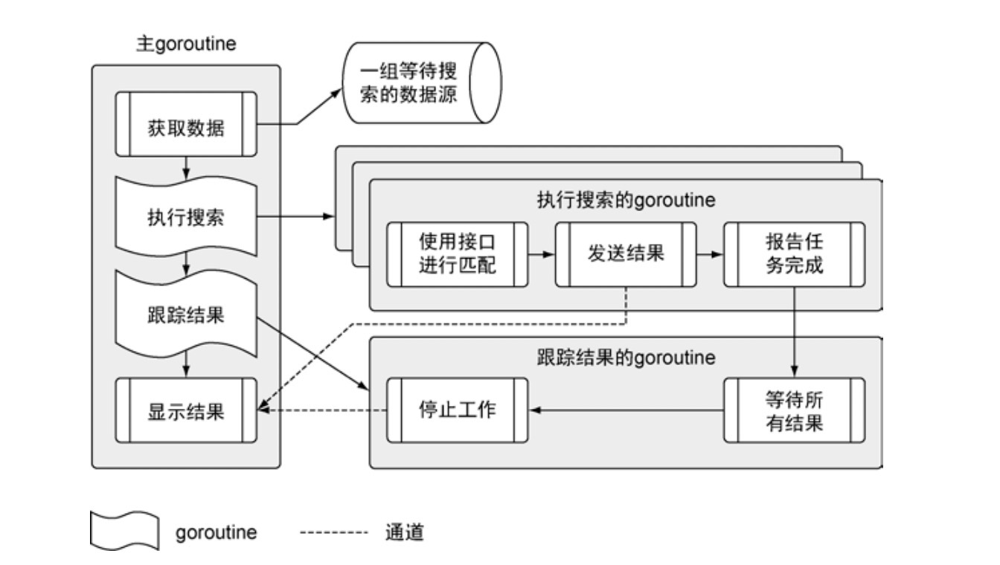

Go语言实战-读书笔记20190226
快速开始一个Go程序
前言
以一个例子快速了解如何声明类型、变量、函数、方法；启动并同步操作goroutine；使用接口写通用的代码；处理程序逻辑和错误。代码地址
程序架构

声明 变量、函数、方法
在Go语言里，标识符要么从包里公开（变量名以大写字母开头），要么不公开（变量名以小写字母开头）。当代码导入一个包时，程序可以访问这个包内任意公开标识符。但是，其他包可以间接访问不公开的标识符。例如，一个函数可以返回一个未公开类型的值，那么这个函数的任何调用者，哪怕调用者不是在这个包里声明的，都可以访问这个值。
声明变量
两种声明变量的方式
var
var a int:=
a := 1
Go语言中变量没有特定赋值都会被初始化为其零值。数值类型零值是0；字符串类型零值是空字符串；布尔类型零值是false；指针类型零值是nil；引用类型所引用的底层数据结构会被初始化为对应零值，但引用类型的变量会是nil作为其值。
map 是 Go 语言里的一个引用类型，需要使用 make 来构造。如果不先构造 map 并将构造后的值赋值给变量，会在试图使用这个 map 变量时收到出错信息。这是因为 map 变量默认的零值是 nil。
// 正确用法 |
声明函数
关键字func声明函数，结构是 func + 函数名 + 参数 + 返回值 + 函数体
声明方法
结构是 func + 接收者 + 函数名 + 参数 + 返回值 + 函数体
函数和方法的区别
函数的格式是固定的，func + 函数名 + 参数 + 返回值 + 函数体。在go语言中有两个特殊的函数，main函数和init函数。而方法是包含了接收者的函数。
type myint int |